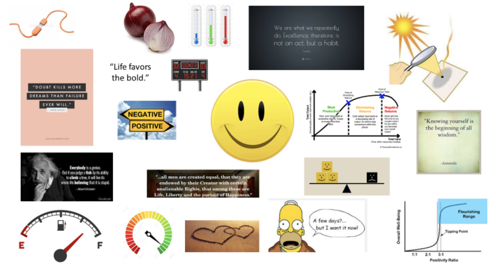

Pictures paint a thousand words.
Our last for the first phase of the happiness experiment is for you to build yourself a happiness collage. It should contain pictures of the people, quotes, places, experiences that bring you happiness.
Here is a collage that we put together for a recent presentation. In this example we put quotes and pictures of things that we can do to increase our happiness. See how many of the below pictures you can identify with, then create your own collage.
Action:Create your own collage. Print it and keep it in a visible place. Share the things that make you happy with friends and family. Keep it fresh, update the collage as necessary.
Whew!!! You made it. Thank you for sticking with the Happiness Experiment for this first phase. 4 lessons, 29 thoughts, a couple of questionnaires. We hope that you have learned a few things about yourself and have found the daily balance chart useful and have started to build a daily happiness routine for yourself.
Please help us out by completing 2 final questionnaires. They are the same questionnaires that you filled in at the start. Our goal is to find our whether or not this experiment has made and impact. Have we improved happiness. Have we planted the seeds of happiness and created a fertile soil for them to grow.
All the best on your Journey!!! Please let us know how we can be of further service.